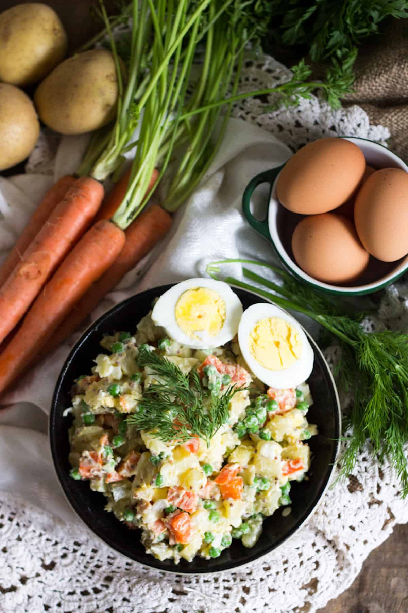

Olivier

Ingridients:
2 potatoes
2 carrots
3 eggs
2 large dill pickles
1 onion
1 cup frozen peas
2 tablespoon mayonnaise
1 tablespoon grainy mustard
2 teaspoons French white wine vinegar
2 cloves garlic
Steps
- In a large pot, place carrots and potatoes with plenty of water. Bring to a boil, and cook potatoes and
carrots until easily pierced with a fork, about 30 minutes. Cook three hard boiled eggs.
- Peel potatoes, carrots and eggs (I use the back of a sharp paring knife to peel the potatoes and carrots).
Chop finely. Combine in a large bowl with onions, pickles, peas and dressing ingredients. Mix until well
combined – eggs will break a little, and that's OK – they will help flavour the sauce. Taste and correct
seasonings. Let sit In the fridge for at least a couple of hours, preferably overnight. Serve with a little
bit of fresh dill on the side.